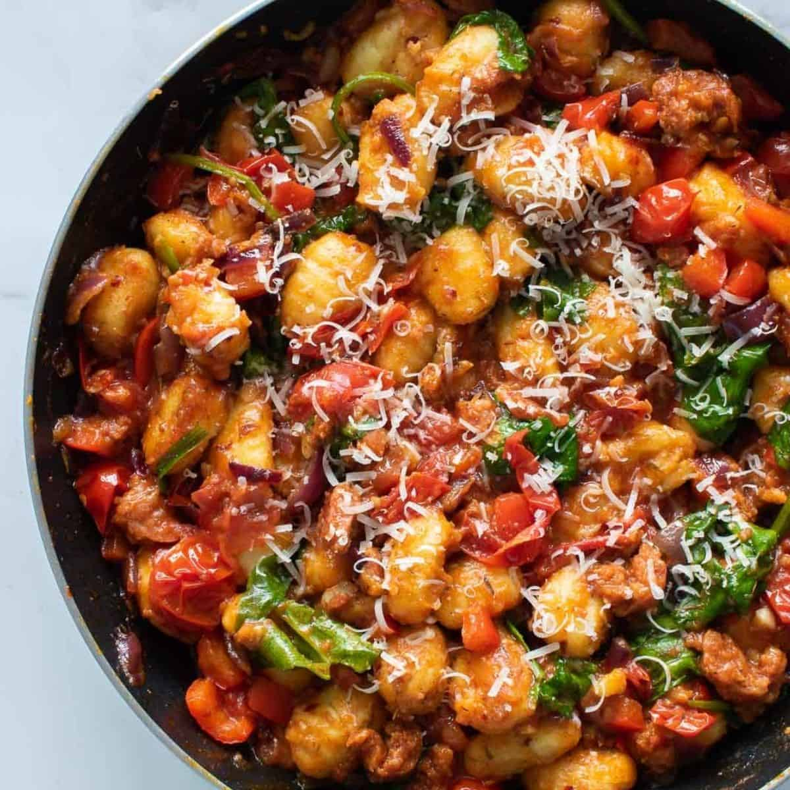

Upgrade cheesy tomato pasta with gnocchi, chorizo and mozzarella for a comforting bake that makes an excellent midweek meal. This recipe was taken from bbcgoodfood.com.
- 1 tbsp olive oil
- 1 onion, finely chopped
- 2 garlic cloves, crushed
- 120g chorizo, diced
- 2 x 400g cans chopped tomatoes
- 1 tsp caster sugar
- 600g fresh gnocchi
- 125g mozzarella ball, cut into chunks
- small bunch of basil, torn
- green salad, to serve
- Heat the oil in a medium pan over a medium heat. Fry the onion and garlic for 8-10 mins until soft. Add the chorizo and fry for 5 mins more. Tip in the tomatoes and sugar, and season. Bring to a simmer, then add the gnocchi and cook for 8 mins, stirring often, until soft. Heat the grill to high.
- Stir ¾ of the mozzarella and most of the basil through the gnocchi. Divide the mixture between six ovenproof ramekins, or put in one baking dish. Top with the remaining mozzarella, then grill for 3 mins, or until the cheese is melted and golden. Season, scatter over the remaining basil and serve with green salad.